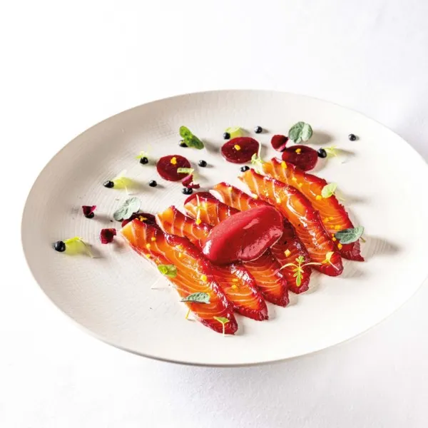
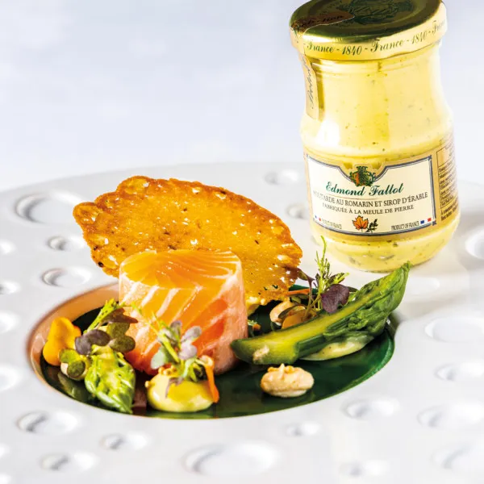
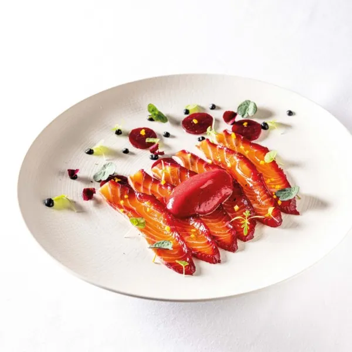
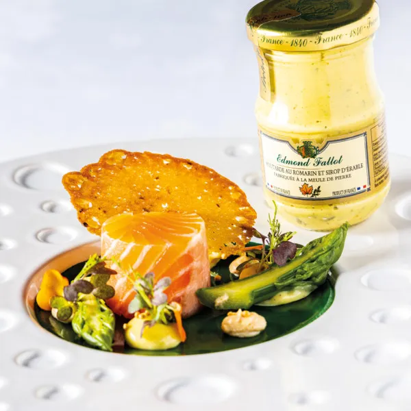
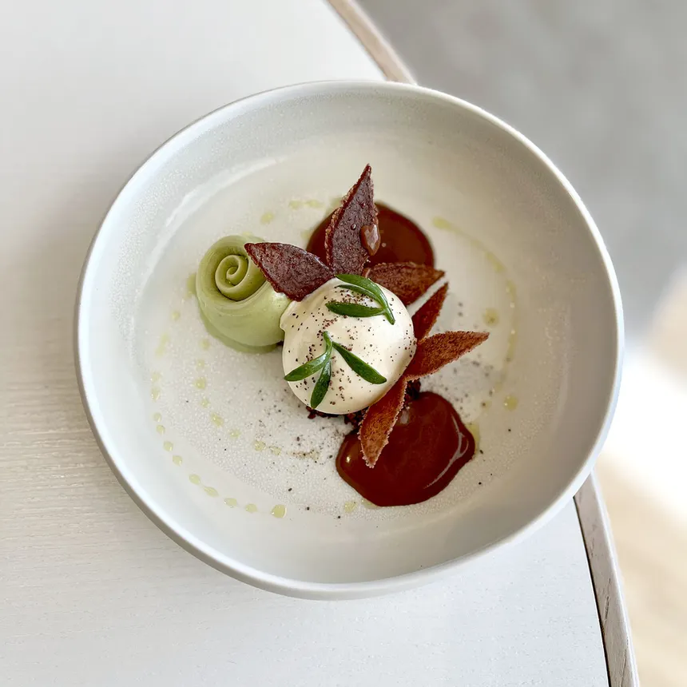
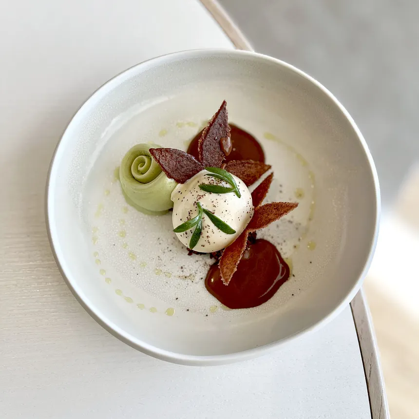

Atmosphere propose plusieurs façons de vivre une expérience culinaire unique, selon l’heure de la journée, au sommet du Burj Khalifa.
Repas au-dessus des nuages avec des plats sophistiqués tels que œufs truffés, saumon fumé et fruits frais.
Tarifs à partir de 250 AED par personne.
Déjeuner raffiné aux saveurs modernes, accompagné d’une sélection de vins rosés, avec une vue imprenable sur la skyline de Dubaï.
Menu dégustation en plusieurs plats, imaginé par des chefs renommés, mêlant cuisine française contemporaine et influences internationales.
Profitez d’un thé l’après-midi, de cocktails raffinés ou de plats légers tout en admirant le coucher de soleil.


 



 
